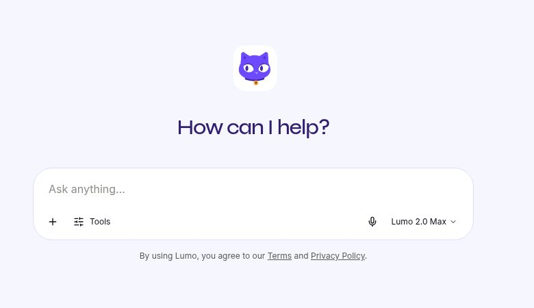
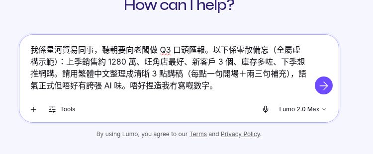
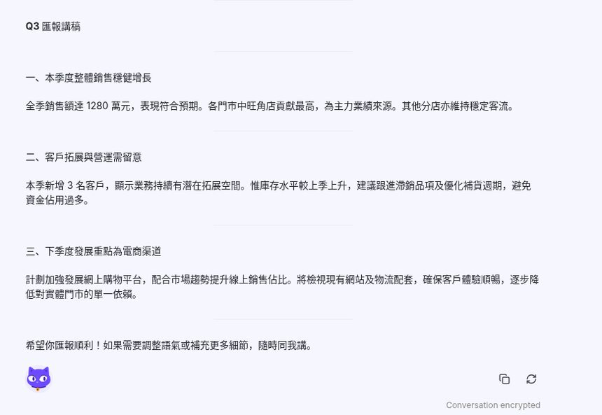
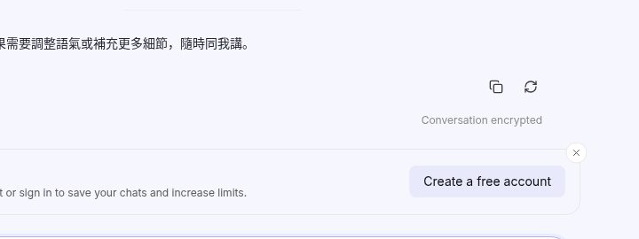

聽朝要向老闆做 Q3 口頭匯報，手上只有幾句零散備忘。第27集用 Proton Lumo 嘅 Guest：唔使帳戶，打備忘，等 3 點講稿，撳複製。備忘寫明全屬虛構示範，公司名係「星河貿易」。
Reel 一句講晒：Lumo｜同老細傾／3點講稿
唔係職場意見：講稿只係開口起點。1280 萬、旺角店、3 個新客戶、庫存、網購都係虛構備忘。AI 加咗備忘冇寫嘅句子，開口前要刪走。
你會學到
- 點樣開 Lumo Guest，唔使帳戶打同老細傾嘅備忘
- 點樣叫佢整理成 3 點講稿：一句開場，再兩三句補充
- 點樣撳複製，對返備忘先開口
開始前準備
- 瀏覽器開 lumo.proton.me/guest（Guest 唔使帳戶）
- 先寫低你真係可以講嘅幾點。示範只用虛構備忘：上季銷售約 1280 萬、旺角店最好、新客戶 3 個、庫存多咗、下季想推網購
- 真公司名、真銷售數字、客名，呢版示範唔會打落去

可抄提示
下面係打入對話框嘅示範句。備忘自己寫明全屬虛構示範。你自己用就換走，唔好連「星河貿易」同 1280 萬一齊講出去。
我係星河貿易同事，聽朝要向老闆做 Q3 口頭匯報。以下係零散備忘（全屬虛構示範）：上季銷售約 1280 萬、旺角店最好、新客戶 3 個、庫存多咗、下季想推網購。請用繁體中文整理成清晰 3 點講稿（每點一句開場＋兩三句補充），語氣正式但唔好有誇張 AI 味。唔好捏造我冇寫嘅數字。
3 步做法
-
開 Guest 打 Q3 備忘：開 lumo.proton.me，用 Guest，唔使帳戶。將上面嗰段打入對話框。未撳之前，備忘仍然留喺輸入框。
畫面係輸入框入面嗰段虛構備忘。下面見到 Tools 同 Lumo 2.0 Max。右下角係紫色圓形箭咀。

真實畫面（2026-10-12 自行截圖，Guest）：備忘打好，紫色箭咀未撳。備忘寫明全屬虛構示範。 -
撳紫箭咀：撳紫色圓形箭咀，等 3 點出齊。標題係「Q3 匯報講稿」，三點係：本季度整體銷售穩健增長、客戶拓展與營運需留意、下季度發展重點為電商渠道。
對得上備忘嘅，得呢五樣：1280 萬、旺角店最好、新客戶 3 個、庫存多咗、下季想推網購。回覆多咗出嚟、備忘冇寫嘅，包括「表現符合預期」、「其他分店亦維持穩定客流」、滯銷品同補貨週期、以及要檢視網站同物流、降低對實體門市嘅依賴。呢啲唔好照講。
出齊三點同最後一句「希望你匯報順利」先再睇，唔好見到第一點就當完成。

真實畫面（2026-10-12 自行截圖）：撳紫色箭咀之後嘅 3 點講稿。對返備忘，多咗出嚟嘅句子唔好照講。 -
撳 Copy：回覆下面撳複製圖示，抄走全文。再讀一次：備忘只有五項。多咗嘅判斷同建議刪走，先至同老闆講。
畫面見到 “Conversation encrypted”，下面有 “Create a free account to sign in to save your chats and increase limits.” 呢次係 Guest，未登入就唔會幫你存檔。
備忘全屬虛構示範。呢份講稿唔係職場意見。

真實畫面（2026-10-12 自行截圖）：回覆下面撳複製。Guest 未登入，畫面寫要開帳戶先儲到對話。
常見錯誤／注意事項
- 打真銷售數字：1280 萬、旺角店、3 個新客戶都係虛構備忘。真數字、真公司名留返你自己講。
- 照稿讀：Lumo 加咗「表現符合預期」、其他分店客流、滯銷品同補貨、以及網站物流。備忘冇寫，就唔好講。
- 當職場意見：庫存點處理、網購點做，唔係 Lumo 可以話實。跟你公司嘅數。
- 以為 Guest 會幫你存檔：畫面寫 Create a free account to save your chats。未登入就唔留低。想存檔先開帳戶。
- 當畫面永遠一樣：紫色箭咀、Lumo 2.0 Max、複製圖示以當日網站為準。
備忘寫明全屬虛構示範。公司名係「星河貿易」。
香港用戶留意
用瀏覽器開 Guest 就得，示範冇登入、冇裝 App。輸入框係英文「Ask anything...」，模式見到 Lumo 2.0 Max；回覆用繁體中文，跟你嘅提示。
官方說明
- Lumo Guest（Proton）
2026-10-12 核實：Guest 入口回 200。示範冇登入，打虛構備忘 → 撳紫色圓形箭咀 → 等 3 點講稿 → 撳複製。畫面寫 Conversation encrypted，並提示開帳戶先儲到對話 - Lumo（Proton 官方產品頁）
2026-10-12 再讀：官方寫 privacy-first、no-logs policy、zero-access encryption，並寫可以用 guest access，唔使登入或者開 Proton 帳戶
（Guest 入口同產品頁當日打開回 200；逐步畫面係同日截圖。介面可能更新，以官方為準）
原帖
睇原 Reel ↗（2026-10-13 發佈）